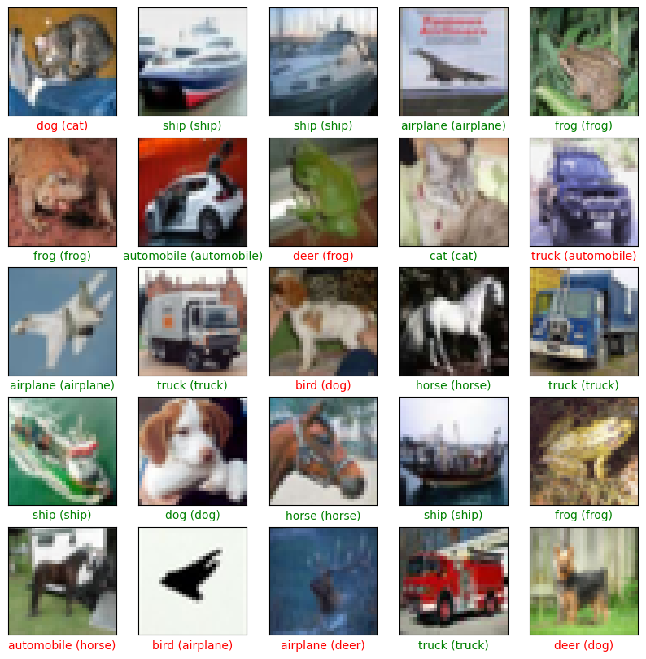

2. Desarrollo
Ejercicio 1: Importación de Módulos
Se importan las librerías fundamentales para el desarrollo de redes neuronales con Keras (backend de TensorFlow), así como NumPy para manipulación numérica y Matplotlib para visualización.
import numpy as np from keras.models import Sequential from keras.layers import Flatten, Dense, Input, Conv2D, MaxPooling2D from keras.datasets import cifar10 from keras.utils import to_categorical from matplotlib import pyplot as plt

Ejercicio 2: Carga del Dataset
Se carga el dataset CIFAR-10, dividiéndolo en conjuntos de entrenamiento (train) y prueba (test). Se visualiza la primera imagen del conjunto de entrenamiento para verificar la carga correcta.
(X_train, y_train), (X_test, y_test) = cifar10.load_data() plt.imshow(X_train[0])

Ejercicio 3: Exploración y Preprocesamiento
Se normalizan los datos de entrada dividiendo los valores de píxeles
por 255.0 para obtener un rango entre 0 y 1. Las etiquetas se
convierten a formato one-hot encoding utilizando
to_categorical.
X_train = X_train.astype('float32') / 255.0
X_test = X_test.astype('float32') / 255.0
y_train = to_categorical(y_train)
y_test = to_categorical(y_test)
# Dimensiones: (50000, 32, 32, 3)

Ejercicio 4: Creación del Modelo Base
Se construye un modelo secuencial básico con capas convolucionales (Conv2D), de pooling (MaxPooling2D), aplanado (Flatten) y capas densas (Dense).
model = Sequential([
Input(shape=(32, 32, 3)),
Conv2D(32, (3, 3), activation='relu'),
MaxPooling2D((2, 2)),
Conv2D(64, (3, 3), activation='relu'),
MaxPooling2D((2, 2)),
Flatten(),
Dense(64, activation='relu'),
Dense(10, activation='softmax')
])

Ejercicio 5: Entrenamiento del Modelo Base
Se compila el modelo con el optimizador Adam y función de pérdida de entropía cruzada categórica. Se entrena durante 20 épocas.
Precisión final en entrenamiento (Epoch 20): ~87.5%
Precisión en test: 67.92%
Pérdida en test: 1.2328

Ejercicio 6: Mejora del Modelo
Se diseña una arquitectura más profunda (añadiendo una capa Conv2D de 128 filtros y capas densas más grandes) y se entrena durante 50 épocas para intentar mejorar el rendimiento.
model2 = Sequential([
...
Conv2D(128, ...),
...
epochs=50
...
])
Precisión final en entrenamiento: 98.68%
Precisión en test: 69.77%
Sí, se ha conseguido una mejora ligera en la precisión del conjunto de test, pasando de un 67.92% a un 69.77%. Sin embargo, la mejora en el conjunto de entrenamiento ha sido drástica (llegando casi al 99%), lo cual tiene implicaciones importantes sobre el ajuste del modelo que se analizan a continuación.

Ejercicio 7: Evaluación de Resultados
Se compara el rendimiento del modelo entre los datos de entrenamiento y los datos de validación/test.
Sí, existe una diferencia muy significativa. Mientras que en entrenamiento se alcanza un 98.46% de precisión, en test se obtiene solo un 69.77%. Una brecha de casi 30 puntos porcentuales indica un claro caso de Overfitting (sobreajuste): el modelo ha "memorizado" los datos de entrenamiento pero no generaliza correctamente ante datos nuevos.

Ejercicio 8: Visualización de Predicciones
Se visualizan las predicciones del modelo sobre las primeras 25 imágenes del conjunto de test. Las etiquetas verdes indican que la predicción coincide con la etiqueta real (acierto), mientras que las rojas indican un error.

Análisis de la imagen:
En la Figura 8 se observa una muestra representativa del desempeño del
modelo. Dada la precisión global del ~69%, es esperable observar
varios errores (texto en rojo) en esta muestra. El modelo tiende a
clasificar correctamente objetos con formas distintivas y fondos
contrastados (como aviones o barcos en el cielo/mar), pero muestra
confusión en categorías con características visuales compartidas, como
puede ser la distinción entre animales cuadrúpedos (gatos, perros,
ciervos) cuando la imagen es de baja resolución o tiene fondos
complejos.